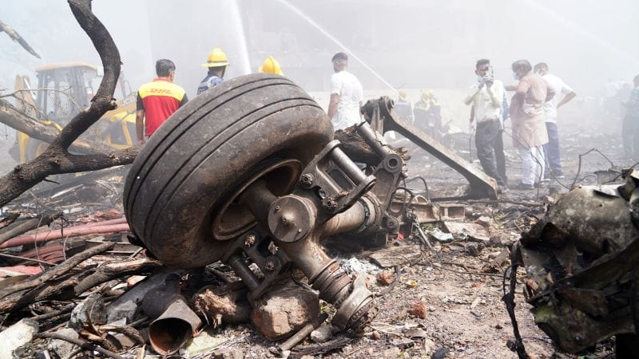

世界苦茶07月12日新闻 | 39条 | 印度空难可能是人为所致

印度空难可能是人为所致 | 法国对X开展刑事调查 | 王毅与卢比奥会面 | 印度外长将访华
今日三条新闻分析
苦茶数据
美元兑人民币：7.17（昨日7.17，前日7.17）
美元兑日元：147.33（昨日147.10，前日146.06）
上证指数：休市（昨日3510，前日3546）
标普500指数：休市（昨日6259，前日6280）
比特币：117671（昨日116511，前日111228）
布伦特原油：70.69（昨日68.79，前日70.16）
中国新闻
• 印度外长即将访华 ：据知情人士透露，印度外交部长苏杰生本周末将对中国进行逾五年来的首次访问，两国在2020年边境冲突后试图修复受损的双边关系。因事未公开而要求匿名的消息人士称，苏杰生将在北京与中国外长王毅举行双边会谈，随后前往天津出席7月14日至15日举行的上海合作组织外长理事会会议。他们补充称，两位外长在峰会之外单独会晤，凸显了双方修复紧张关系的努力。上海合作组织是一个由中国牵头的多边组织，目前有九个永久成员国，包括印度和巴基斯坦。
• 云南五名失联者遇难 ：中国云南省昭通市威信县因强降雨灾害导致失联的五人已找到，均不幸遇难。据澎湃新闻报道，从云南省昭通市消防救援支队获悉，星期五下午4时15分，上述失联人员已全部找到，均不幸遇难。7月8日以来，昭通市大部地区遭遇强降雨天气，导致镇雄、威信等地不同程度受灾，其中威信县罗布镇黑龙村两栋房屋被冲毁，五人失联。
• 检察长支持女检官 ：中国最高人民检察院检察长应勇提出，要高度重视女检察官的培养选拔，让更多女检察官脱颖而出，大有可为、应有作为。据中国《检察日报》报道，中国女检察官协会第六次会员代表大会星期四在北京召开，应勇发表讲话时称，中国女检察官协会第五届理事会聚焦法律监督主责主业，在团结女检察官干事创业、服务女检察官成长成才等方面做了大量工作，为促进检察工作高质量发展贡献重要力量。他说，广大女检察官以高度的政治自觉、坚韧的意志品质、过硬的专业素养、细致的工作作风，通过检察履职办案捍卫法治尊严、维护公平正义，是人民检察事业不可替代的“半边天”。
• 李泽楷大陆拓展受阻 ：知情者透露，香港富豪李泽楷旗下保险公司进军中国大陆市场的谈判，因父亲李嘉诚出售巴拿马港口业务的风波陷入停滞。彭博社星期四引述知情者报道，李嘉诚旗下的长和集团3月初公布出售港口的交易时，李泽楷正就签署一项协议进行谈判，这项协议将为李泽楷的公司取得中国保险牌照。知情者说，由于北京方面反对巴拿马港口交易的不确定性，相关谈判已暂停。知情者称，收购或与一家大陆保险公司合作，将使李泽楷旗下保险公司富卫集团进军利润丰厚的大陆市场。
• 特习或将再会面 ：美国国务卿鲁比奥星期五中国外长王毅会晤后说，尽管中美两国存在争议，但特朗普总统可能很快会见中国国家主席习近平。《华盛顿邮报》报道，鲁比奥会谈后告诉记者，这是一次“非常有建设性、积极的会晤”，并补充说，两国有很多可以共同努力的地方。当被问及特朗普和习近平今年晚些时候举行面对面会晤的可能性时，鲁比奥表示“可能性很高”，双方都希望实现这一目标。“我没有具体日期，但我认为很快就会实现。”
• 中日军机东海险近距离 ：日本军方证实，中国轰炸机在东海空域异常接近日本电子侦察机。据日本共同社报道，日本国防部星期四通报，中国军机在星期三和星期四在东海上空飞行时，异常接近日本航空自卫队飞机。由于此举可能引发偶发性冲突，日本外务事务次官船越健裕星期四向中国驻日本大使吴江浩表达严重关切，并严正要求防止类似事件再次发生。日本国防部称，在日本周边的东海公海上空，中国空军一架歼轰-7战斗轰炸机在星期三上午9时50分至10时05分之间，在距离日本航空自卫队一架YS-11EB电子侦察机水平约30米、垂直约60米的位置进行了约15分钟的近距离抵近。星期四上午9时至9时10分之间，中日军机水平距离扩大至60米，垂直距离则缩短至30米，接触时间持续了10分钟。
• 澳总理访华提人权议题 ：即将访华的澳大利亚总理阿尔巴尼斯说，他在与中国国家主席习近平会晤时，不会回避安全与人权议题。阿尔巴尼斯将从星期六起，对中国展开为期七天的正式访问，并将前往上海、北京与成都，同时预计将与习近平举行任内的第四次会晤。据彭博社报道，阿尔巴尼斯星期五在悉尼受访回应有关北京在南中国海扩大军事存在，以及华裔澳籍作家杨恒均被监禁等提问时说：“我们会提出所有相关议题。”
• 王毅支持越入上合组织 ：中国外交部长王毅与越南副总理兼外长裴青山会面时说，中国支持越南早日加入上海合作组织，共同坚持真正的多边主义。据中国外交部网站消息，王毅星期四在吉隆坡与裴青山会面时说，中国视越南为周边外交优先方向，愿同越南一道，以建交75周年为新起点，保持高层交往，加强战略互信，深化互利合作，妥善处理分歧，推动中越命运共同体建设不断取得新进展。他说，面对变乱交织的国际地区形势，中国愿同越南加强在东亚合作平台的战略协调，欢迎越南成为金砖伙伴国，支持越南早日加入上海合作组织大家庭，共同坚持真正的多边主义，维护国际公平正义。 （翻評：還嫌上合組織內部分裂不夠厲害？）
• 中国将宣判日人间谍案 ：日本媒体报道称，中国法院将于下周对涉嫌间谍案的日本药企男员工宣判。综合日本共同社和日本经济新闻报道，日中关系消息人士星期四透露，北京市第二中级人民法院将于下星期三举行的公审对因间谍罪被起诉的日本制药公司安斯泰来日本籍男员工作出判决。中方星期三向日本大使馆通报公审判决日程。大使馆人员计划到场旁听。中方未透露该员工被起诉的具体内容。
• 中马互免签证将生效 ：中国和马来西亚两国的互免签证协定，将在下星期四生效。中国央视新闻报道，根据协定，持有效的中国公务普通护照、普通护照和马来西亚普通护照人员，以休闲旅游、探亲访友、商务活动、交流访问、私人事务、医疗、国际运输为目的，在缔约另一方入境、出境或者过境，停留不超过30天，且每180天累计停留不超过90天，可免办签证。两国早前同意延长互免签证安排五年，并将两国公民的免签停留期限延长至90天。
• 陆委会不建议办金厦泳渡 ：已有16年历史的两岸体育盛会金厦泳渡定于7月27日举行，台湾政府的大陆委员会受询时表示，不建议体育署办理这项活动。综合台湾《联合报》《工商时报》等报道，台湾陆委会副主委兼发言人梁文杰星期四在例行记者会上应询时指出，由于大陆海警船从去年开始频繁侵扰金门禁限制水域，陆委会已向体育署提出“不建议办理”意见。至于在金厦泳渡之前举行的金门海上长泳活动，梁文杰则说，该活动在台方水域举办，为一般体育专业交流，由体育署审认，陆委会乐见其成。
亚太印太新闻
• 印度空难初查出炉 ：印度航空公司一架客机6月12日起飞后不久坠毁，造成260人遇难。初步调查报告指出，称该客机发动机燃油控制开关在撞击前瞬间从“运行”位置移至“切断”位置。这份由印度航空事故调查局在星期六凌晨发布的初步报告并未对6月12日的空难做出任何结论或责任划分。飞机起飞后的闭路电视录像显示，一个名为冲压空气涡轮的备用能源启动，表明发动机失去了动力。法新社引述这份长达15页的报告说，飞机达到最高记录速度后，“一号发动机和二号发动机的燃油切断开关相继从“运行”位置切换到“切断”位置，时间间隔为一秒”。报告并未说明这些开关是如何在飞行过程中切换到切断位置的。
• 印度坠机聚焦人为 ：据了解美国官员早期评估的人士透露，上个月印度航空坠机事件的调查重点，放在飞机驾驶员的操作行为上，目前尚未发现波音787梦幻飞机本身存在问题。《华尔街日报》星期四引述知情者报道，初步调查结果显示，控制喷气机两台发动机燃油流量的开关被关闭，导致飞机起飞后不久明显丧失推力。据了解，飞行员使用这些开关来启动发动机、关闭发动机，或在某些紧急情况下进行复位。在正常情况下，这些开关应在飞行中保持开启。
• 台风重创台光电设施 ：台风“丹娜丝”过境台湾，台湾多地光电设施遭受重创，国民党批涉事设施不堪一击，是“海上垃圾”。综合台湾东森新闻、联合新闻网等媒体星期三报道，台风“丹娜丝”过境台湾，重创屏东县佳冬乡塭丰海堤外的海上光电设施，沙滩上满是残骸。该光电设施所有者旭东环保科技公司星期四披露，散落物件的清运费为50万元新台币。此外，因未能在规定的48小时内完成清运，该企业还面临屏东县处罚。
• 缅寺庙遇袭23人亡 ：目击者星期五称，缅甸实皆省一个村庄的一座寺庙遭袭，已确认至少23人死亡，其中包括四名儿童。路透社报道，实皆县人民政府负责人莱布瓦说，这座位于林塔鲁村的寺庙星期五凌晨遭到袭击。该政府是一个支持民主的组织，负责管理中部部分地区。他和一名当地居民称此次袭击是缅甸军政府发动的。军政府发言人未回应置评请求。
• 台在野党促发现金 ：台湾在野的国民党立法院党团决议推动向民众发放1万元现金新台币，民进党指责国民党企图借发现金救罢免，纵容国防漏洞。综合台湾《联合报》和民视新闻网报道，美国拍板决定对台关税前，台湾立法院星期五排定审议《因应对外经济情势影响特别条例草案》。朝野党团在审议过程中广泛发言，讨论热烈。行政院版本提出总额4100亿元的特别预算，内容包括补助台电1000亿元，其余经费用于提升国土安全韧性，以及民生与国防相关支出。然而，在野的国民党与民众党主张删减对台电的补助与国土安全预算，改为向全民普发现金。 （翻評：最傻X的民粹主義買票政策。）
• 韩美日空演出动B-52 ：韩国国防部星期五说，韩国、日本、美国在济州岛以南的公海上举行联合空中演习，美军B-52H战略轰炸机今年首次到朝鲜半岛参加联演。韩联社报道，这是李在明政府上月成立后举行的第二次韩美日联合空演。除B-52H之外，韩国空军KF-16战机、日本航空自卫队F-2战机等也参演。韩美日6月18日举行联合空演，当时韩国空军F-15K战机、美国空军F-16战机、日本航空自卫队F-2战机参演，美军未出动B-52H。
• 洪秀柱盼青年避战场 ：台湾在野的国民党前主席洪秀柱在一场论坛上说，两岸青年的未来不该埋葬在战场上，要寄托于中华民族的伟大复兴。据台湾《联合报》报道，也是中华青雁和平教育基金会董事长的洪秀柱星期五在杭州揭幕的第八届海峡两岸青年发展论坛上致词时说，国际局势瞬息万变，外来世界威胁与挑拨，以及对中国大陆崛起的忌惮，并未让大家真正远离动乱的风险。她质疑，在美中竞争愈演愈烈的情势下，台湾会否被美国利用沦为反中的棋子，进而引发台海动荡，同胞相残的内战？ （翻評：中共不侵台就沒有人青年會埋葬在戰場上。）
科技新闻
• 法国调查X平台算法操控進行刑事調查 ：法国正在对埃隆·马斯克的X平台启动刑事调查，原因是其涉嫌为外国干涉目的而操纵算法的行为。巴黎检察官办公室宣布，国家宪兵队将负责这项调查。巴黎检察官洛尔·贝科在声明中表示，调查对象包括作为法律实体的X平台以及未具名的个人。在调查范围内，她强调了以下两项潜在罪行：由有组织团体对自动化数据处理系统的 “运行进行改变” 和 “欺诈性数据提取”。今年2月，在巴黎检察院网络犯罪部门就该社交网络涉嫌使用算法操纵进行外国干涉一事提交了两份报告后，她的办公室对 X 平台展开了初步调查。
财经新闻
• 美印或将签临时协议 ：知情人士透露，美国正努力与印度达成一项临时贸易协议，可能将拟议关税税率降至20%以下，从而使印度相对亚洲其他国家处于较为有利的位置。彭博社引述知情人士说，与本周接连收到关税函的多个国家不同，印度预计不会收到类似信函，而是将通过一份声明形式宣布该贸易安排。该临时协议将为继续谈判留出空间，使印度有时间解决剩余问题，在秋季达成更广泛协议。据称这份声明可能将关税基准设定在20%以下，同时保留允许双方在最终协议中继续就关税水平进行协商的措辞。临时协议的具体达成时间尚不确定。
• 科大讯飞预计亏损 ：由于在大模型落地等领域研发投入加大，中国语音识别技术公司科大讯飞预计上半年净利润亏损超2亿元人民币。综合澎湃新闻和新黄河报道，科大讯飞星期四发布公告，预计2025年上半年归属母公司净利润亏损2.8亿元-2亿元，相比上年同期4.01亿元的亏损有所缩减。公告显示，科大讯飞预计上半年毛利增长超6亿元，销售回款总额约103亿元，同比增长约13亿元；报告期末经营现金流量净额同比增长超7亿元，增长约50%。
• 专家呼吁新经济刺激 ：包括中国人民银行顾问在内的学者呼吁，中国政府应出台1万5000亿元人民币的新刺激经济措施，以提振消费支出，同时维持货币弹性，以抵销美国关税对经济增长的拖累。据彭博社报道，中国人民银行货币政策委员黄益平、央行前官员郭凯和新加坡国立大学东亚研究所所长席睿德在星期五发布的报告中说，自4月以来，中国经济一直面临“新干扰”，当时适逢美国加征关税，加上中国的通缩持续未消。他们在报告中指出，为了应对这些不断变化的挑战，中国必须采取更强大的逆周期政策来维持稳定增长，同时大力推动结构性改革。
• 野村警告需求将下滑 ：野村证券提醒，尽管陆港股市近期走高，但今年下半年经济基本面可能显著恶化，多领域需求将大幅减弱。野村证券首席中国经济师陆挺与其团队星期三在一份报告中指出，与过去几年相似，今年中国经济也会在年中出现转折点，尤其是需求将出现断崖式下跌。报告说，中国官方5月发布新一轮党政机关厉行节约反对浪费条例，该条例目前已全面生效，挤压了中高端餐饮的经营，并大幅削减了酒类销售。
• 台放宽美猪牛进口限制 ：台湾媒体报道，在台美关税谈判中，台湾拟放行过去管制的美牛内脏及绞肉，并将猪肾的莱克多巴胺瘦肉精剂容许值比照国际标准，这一讯息已传递给美国方面。台湾《联合报》报道，美国总统特朗普本周陆续公布针对日本、韩国等地的关税税率。由于台湾未列入首两波名单，被质疑是台美谈判卡关，其中台湾对美猪、美牛的非关税壁垒，以及莱猪的莱克多巴胺残留值，是谈判卡关的原因之一。台湾目前针对美猪肾的莱剂容许值为0.04百万分率，较日韩及国际食品法典委员会的0.09ppm严格。
• 金管局再出手稳港元 ：在此前几轮干预未能有效回笼流动性以推高资金成本后，香港金融管理局两周内第四次出手干预，阻止港元跌破交易区间的弱方兑换保证水平。根据香港金管局星期五在彭博终端页面的信息，香港金管局买入约133亿港元的本币。彭博根据官方数据统计得出，香港此前三次干预共买入约590亿港元的本币
• 小马可斯将赴美谈关税 ：菲律宾总统小马可斯将于本月到华盛顿与美国总统特朗普会晤，预计两人将讨论美国对这个重要的防务盟友提高关税的问题。在马来西亚出席亚细安外长会议及系列会议的菲律宾外长拉扎罗证实小马可斯将访问美国。这将是特朗普重返白宫近六个月来，两人首次见面。拉扎罗星期五在吉隆坡接受路透社采访时说：“关税问题将是其中一个讨论议题……这对我们来说也非常重要。我们已派一个代表团到美国进行关税谈判。”
• 敏昂莱促美降缅关税 ：缅甸军政府领导人敏昂莱致信美国总统特朗普，要求他把缅甸的关税税率从40%降低到10%至20%，并表示准备在必要时派一个谈判团队前往华盛顿。在特朗普4月初公布的所谓“对等关税”名单中，缅甸面对的关税税率达44%。特朗普7月7日向14个国家发出新的关税通知，其中缅甸被征收的关税降低了4个百分点，至40%。路透社星期五引述缅甸官方媒体报道，敏昂莱在回复特朗普的关税信函中，提议美国将缅甸的关税税率下调到10%至20%，缅甸则把美国进口产品的关税税率降到0%至10%之间。
• 中方拟恢复日牛肉进口 ：日本媒体报道，中国国务院副总理何立峰访日，可能将磋商中国恢复进口日本牛肉事宜。日本共同社星期五引述日中关系消息人士报道，何立峰在星期四晚间抵达日本。报道称，他星期五将出席大阪世博会的中国国家日活动，并可能在当天于大阪府与日本自民党干事长森山裕就恢复日本牛肉输华等事宜进行磋商。
• 鲁比奥称亚关税更优惠 ：美国国务卿鲁比奥说，亚洲国家将被征收的关税税率可能会比世界其他地区“更优惠”。法新社报道，鲁比奥星期四在马来西亚吉隆坡出席亚细安会议时对媒体说：“等一切尘埃落定后，许多东南亚国家的关税税率实际上会比世界其他地区更优惠。”鲁比奥说：“但这些谈判还在进行。与日本的新一轮谈判将在下周举行。我们与这里几乎所有参会国家的谈判都在持续进行。”
俄乌战争
• 欧盟利用冻结俄罗斯资产的利润向乌克兰转移12亿美元： 乌克兰根据七国集团的特别收入加速机制，从冻结的俄罗斯资产中获得资金。根据ERA计划，乌克兰预计将获得500亿美元的贷款，这些贷款将使用冻结俄罗斯资产的未来利润偿还。据Shmyhal称，乌克兰今年已从冻结的俄罗斯资产中获得超过185亿美元的资金，这些资金将用于快速恢复项目。Shmyhal补充说，在7月10日至11日于罗马举行的乌克兰恢复会议上，乌克兰代表团将敦促国际伙伴共同制定全面没收俄罗斯资产的法律机制。自2022年俄罗斯全面入侵以来，七国集团已冻结了约3000亿美元的俄罗斯主权资产。
国际新闻
• 特朗普总统在白宫接待英伟达CEO黄仁勋： 英伟达首席执行官黄仁勋周四在白宫会见了总统唐纳德·特朗普。此次会面正值英伟达股价周四小幅上涨，成为首家在交易日收盘时市值超过四万亿美元的公司，击败苹果和微软，率先达到这一象征性里程碑。英伟达在周三的交易中短暂触及该市值。特朗普周四上午在社交帖子中赞扬了英伟达股票。特朗普在“真相社交”上发帖称：“自特朗普关税实施以来，英伟达股价上涨了 47%。美国通过关税获得了数千亿美元收入。国家现已‘回归’。
• 黎以和平难正常化 ：黎巴嫩总统奥恩星期五排除了黎巴嫩与以色列关系正常化的可能性，但表示希望与以色列建立和平关系。以色列目前仍占领黎巴嫩南部部分地区。法新社报道，奥恩的声明是对以色列外长萨尔上周发表声明的首次官方回应。萨尔在声明中说，以色列有意与黎巴嫩和叙利亚实现关系正常化。总统府发表的一份声明称，奥恩“区分了和平与关系正常化”。
• 罗兴亚援助缺口大 ：联合国难民署星期五说，除非筹集更多资金，否则孟加拉国罗兴亚难民的基本服务将面临崩溃风险。难民署呼吁筹集2.55亿美元用于支持罗兴亚难民，但目前仅落实了35%。路透社报道，超过100万罗兴亚人挤在孟加拉国东南部的难民营，这是世界上最大的难民安置点。大多数人是在2017年为逃离缅甸军方的残酷镇压而来，但也有一些人已经在那里待了很长时间。联合国难民事务高级专员公署发言人俾路支在日内瓦告诉记者：“我们的需求和现有资源之间存在巨大缺口。这些资金缺口将影响罗兴亚难民的日常生活，因为他们每天都依赖人道主义援助来获得食物、医疗和教育。
• 欧盟人口因移民创新高 ：欧盟星期五公布的数据显示，由于移民涌入欧盟，欧盟去年人口达到创纪录的4.504亿，连续第四年抵消了人口自然下降的影响。路透社报道，2024年，欧盟新增人口107万，净移民230万人，弥补了130万的人口自然下降，死亡人数继续超过出生人数。德国、法国和意大利仍然是欧盟人口最多的国家，占欧盟总人口的47%，接近一半。
• 尼日利亚拒收美遣人 ：尼日利亚外交部长说，美国向非洲国家施压，要求他们接收被美国驱逐的委内瑞拉人，但由于自身问题，尼日利亚无法接纳他们。路透社报道，两名知情官员透露，特朗普政府本周要求五位访问白宫的非洲总统接收被美国驱逐出境的其他国家移民。尼日利亚外交部长图加尔星期四晚间告诉当地电视台Channels，尼日利亚无法接受这一点。
• 美限制非法移民就学 ：美国政府将限制非法移民参与美国联邦政府资助的“开端计划”学前教育项目，以限制非法移民获得联邦福利。新华社报道，美国卫生与公共服务部星期四说，将把“开端计划”等13个项目纳入“联邦公共福利”的范畴，这样非法移民将被排除在外，这一新政策在《联邦政府纪事》上发布后将立即生效。卫生与公众服务部下属的儿童与家庭管理局主管“开端计划”事务，该机构一名发言人说，参与“开端计划”的资格将根据儿童的移民身份决定。
• 法官再阻特朗普限公民权 ：美国新罕布什尔州首府康科德市的联邦地区法官约瑟夫·拉普兰星期四做出判决，再次阻止特朗普政府限制“出生公民权”。新华社报道，特朗普于1月份出台旨在限制“出生公民权”的行政令。此前，美国最高法院已经裁定，联邦地区法官无权发布全国性禁令来阻止该行政令实施。美国新罕布什尔州首府康科德市的联邦地区法官拉普兰周四的判决利用了美国最高法院裁决中的一个例外，即允许法官在集体诉讼中继续在全国范围内阻止特朗普政府的政策。拉普兰特此前同意原告提起集体诉讼，诉讼代表那些公民身份可能因特朗普行政令实施而被剥夺的婴儿。
• 英法加强核合作应对威胁 ：英国和法国同意加强在各自核武库方面的合作，以应对欧洲日益增长的威胁以及围绕两国盟友美国的不确定性。路透社报道，英国首相斯塔默星期四在伦敦郊外诺斯伍德军事基地与到访的法国总统马克龙举行联合记者会时说，当天上午，英法双方签署了《诺斯伍德宣言》，首次明确双方将就各自独立的核威慑力量进行协调。斯塔默说：“从今天起，我们的对手将明白，任何针对这片大陆的极端威胁都将引发我们两国回应。没什么比这更能证明我们的关系的重要性。”
• 德拟增购F-35战机 ：据美国政治新闻网Politico星期五引述多名知情人士的话报道，德国计划增购15架F-35战斗机，使德国计划采购的美制F-35战斗机数量增至50架。据报道，德国的订单也符合北约盟国之间达成的一项协议。该协议规定，由于俄罗斯的长期威胁以及加强军事能力的必要性，未来十年，北约盟国将把其集体支出目标提高到产出的5%。德国国防部发言人说，不会在可能的采购计划获得议会批准之前发表评论。